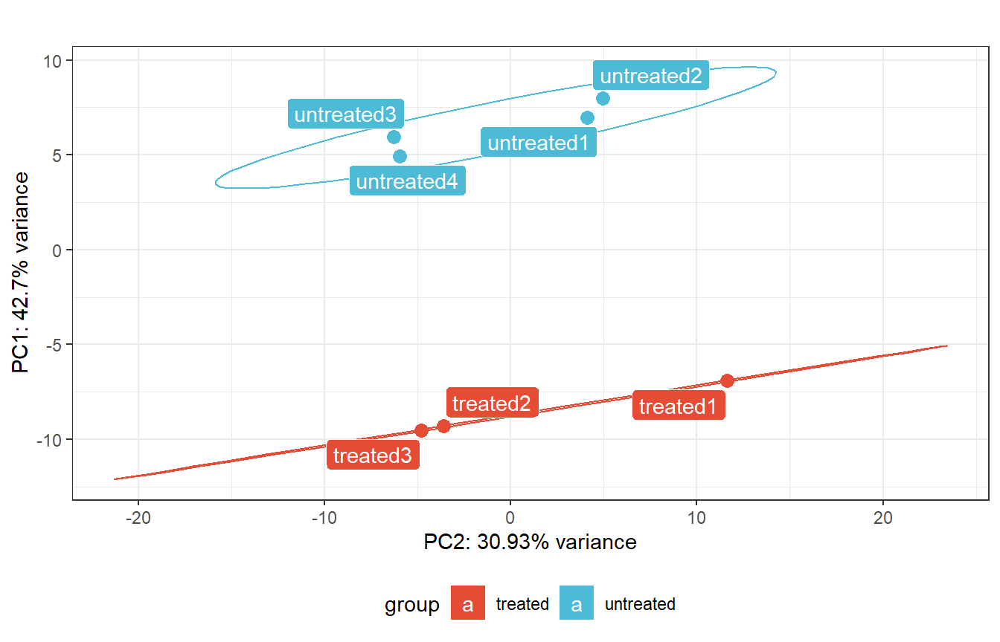
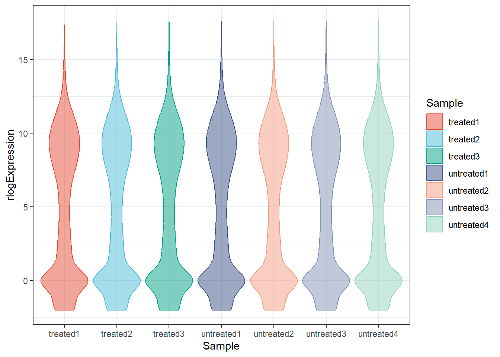
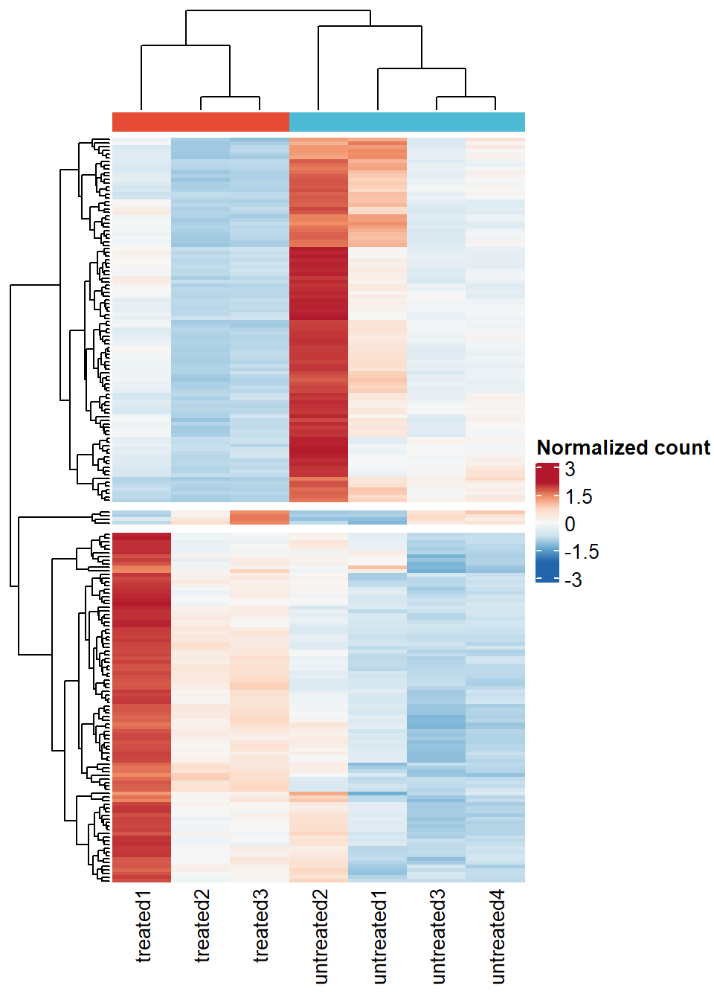
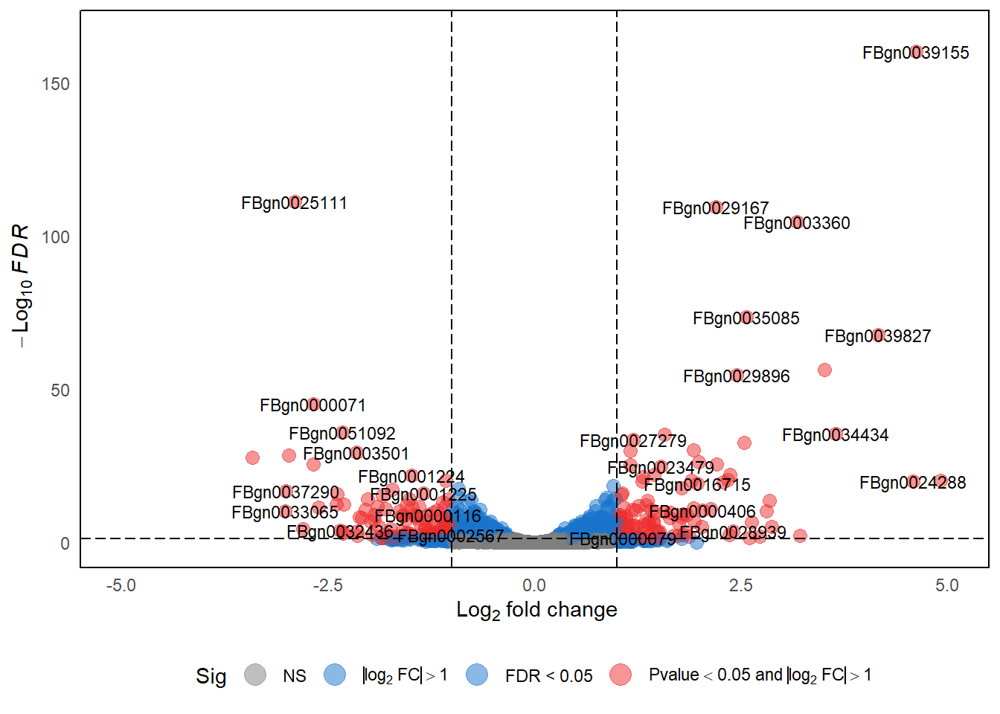
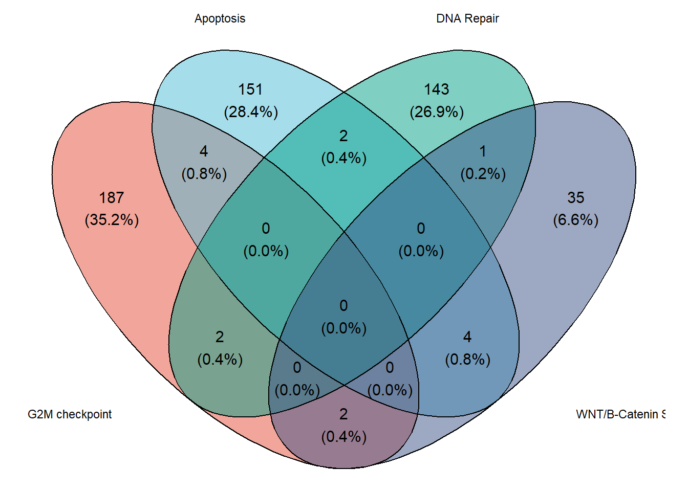
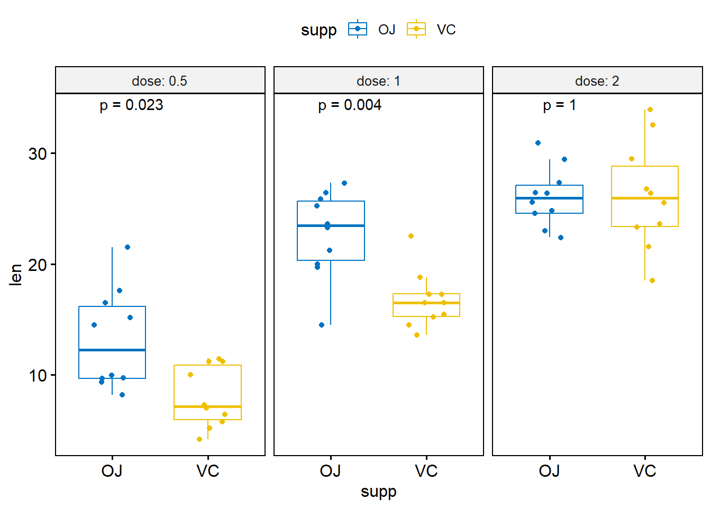

pacman::p_load(
"tidyverse",
"kableExtra",
"openxlsx",
"DESeq2",
"pcaExplorer",
"factoextra",
"ggsci",
"ComplexHeatmap",
"RColorBrewer",
"EnhancedVolcano",
"ggvenn",
"ggpubr",
"kableExtra"
)Plotting Omics Data
1 Load libraries
2 Plotting Abundance of Representative Terms
# Load COG dictionary
COG_dict <- read_delim("https://github.com/JirathNuan/r-handviz-workshop/raw/main/datasets/cog_category.txt")
# Load eggNOG-mapper result
emapper_dt <- read.xlsx("https://github.com/JirathNuan/r-handviz-workshop/raw/main/datasets/Dme_chr4.emapper.annotations.xlsx",
startRow = 3,
cols = 7) %>%
filter(COG_category != "-") %>%
group_by(COG_category) %>%
summarize(n = n()) %>%
left_join(COG_dict, by = c("COG_category" = "category")) %>%
mutate(label = paste0(COG_category, ": ", category_name))
# Show first 10 lines of data frame
head(emapper_dt, 10) %>% kbl() %>% kable_styling(full_width = FALSE)
# Plot
ggplot(emapper_dt, aes(x = COG_category, y = n, fill = label)) +
geom_bar(stat = "identity") +
scale_y_continuous(breaks = seq(0, 100, 10)) +
labs(x = "COG category",
y = "Number of sequences",
fill = "COG category") +
theme(legend.key.size = unit(0.5, 'cm'))- 1
-
cog_category.txtis a cluster of orthologous groups (COG) dictionary. Use for look up the category names into the plot. - 2
-
Read eggNOG-mapper result from excel file into
emapper_dt, usingread.xlsx()from openxlsx library. The excel is read by skipping the first 3 rows and select only 7th column. - 3
-
Then, go to the next step by pipe
%>%. This step it to filter unclassified COGs-from theCOG_categoryusing dplyrfilter(). - 4
-
Then group the data frame by
COG_category. - 5
- Count number of COGs presented in this eggNOG-mapper result.
- 6
-
Merge COG dictionary into the result using dplyr
left_join(). Two data frames are merged by matching the columnCOG_categoryfromemapper_dtwith the columncategoryofCOG_dict. - 7
-
Then, add new column
labelfor the plot legend, by append COG category together with the category name. - 8
-
Plot the result from by showing
COG_categoryin x-axis, number of COGsnin y-axis, fill and add legend by columnlabel. - 9
-
Plot bar plot using
geom_bar()andstat = "identity" - 10
- Set y-axis breaks
- 11
-
Customize label of x- and y-axis, and legend name in
fill. - 12
-
Adjust size of legend using
theme(legend.key.size).

| COG_category | n | category_name | label |
|---|---|---|---|
| A | 5 | RNA processing and modification | A: RNA processing and modification |
| B | 1 | Chromatin Structure and dynamics | B: Chromatin Structure and dynamics |
| C | 5 | Energy production and conversion | C: Energy production and conversion |
| D | 5 | Cell cycle control and mitosis | D: Cell cycle control and mitosis |
| G | 1 | Carbohydrate metabolism and transport | G: Carbohydrate metabolism and transport |
| I | 4 | Lipid metabolism | I: Lipid metabolism |
| J | 6 | Tranlsation | J: Tranlsation |
| K | 55 | Transcription | K: Transcription |
| L | 6 | Replication and repair | L: Replication and repair |
| M | 4 | Cell wall/membrane/envelop biogenesis | M: Cell wall/membrane/envelop biogenesis |
3 Principal Component Analysis
Typically, PCA is used for dimensionality reduction to get lower-dimensional data while keeping the most variation possible by taking only the first few principal components. In principle, SVD (singlular value decomposition) or eigenvalues of the data covariance matrix can be used to evaluate the principal components.
From datacamp, The PCA can be more easily computed by following these five steps:
Normalize data: As these data have different scales, performing PCA on them will result in a biased result. In order to ensure that each attribute contributes equally and to prevent one variable from dominating others, the data set needs to be normalized.
Computing the covariable matrix from the normalized data. This is a symmetric matrix, and each element (i, j) corresponds to the covariance between variables i and j.
Get Eigenvectors and eigenvalues: The term eigenvector refers to a direction in mathematics, such as “vertical” or “90 degrees”. By contrast, an eigenvalue represents how much variance there is in a given direction in the data. Therefore, each eigenvector has a corresponding eigenvalue.
Select the principal components: It’s about choosing the eigenvector with the highest eigenvalue that corresponds to the first principal component. The second principal component is the eigenvector with the second highest eigenvalue, etc.
Transforming data into a new form: A new subspace is defined by the principal components, so the original data is re-oriented by multiplying it by the previously computed eigenvectors. As a result of this transformation, the original data doesn’t change, but instead provides a new perspective to better represent it.
We will demonstrate PCA on a pasilla data set (Brooks et al. 2010). This data set was obtained from an experiment on Drosophila melanogaster cell cultures that investigated the effects of knocking down the splicing factor pasilla using RNAi.
# Load data set
cts <- read_delim("https://raw.githubusercontent.com/JirathNuan/r-handviz-workshop/main/datasets/cts.tsv")
# Prepare DESeq input, which is expecting a matrix of integers.
de_input <- as.matrix(cts[,-1])
row.names(de_input)<- cts$transcript_name
# Remove NAs
de_input <- de_input[complete.cases(de_input), ]
# Show first 10 rows of the matrix
kbl(head(de_input, 10))
# Create sample metadata
coldata <- data.frame(sample = colnames(de_input),
sample_group = gsub("[0-9]", "", colnames(de_input)))
# Show how experimental data looks like
kbl(coldata)- 1
-
Load data set into
ctsdata frame, and convert to matrix. - 2
- Removing NA. The whole row will be deleted if NA is observed.
- 3
- Sample metadata should show a relationship between the sample name (from the matrix column), the sample group, and other experimental design.
| treated1 | treated2 | treated3 | untreated1 | untreated2 | untreated3 | untreated4 | |
|---|---|---|---|---|---|---|---|
| FBgn0000003 | 0 | 0 | 1 | 0 | 0 | 0 | 0 |
| FBgn0000008 | 140 | 88 | 70 | 92 | 161 | 76 | 70 |
| FBgn0000014 | 4 | 0 | 0 | 5 | 1 | 0 | 0 |
| FBgn0000015 | 1 | 0 | 0 | 0 | 2 | 1 | 2 |
| FBgn0000017 | 6205 | 3072 | 3334 | 4664 | 8714 | 3564 | 3150 |
| FBgn0000018 | 722 | 299 | 308 | 583 | 761 | 245 | 310 |
| FBgn0000022 | 0 | 0 | 0 | 0 | 1 | 0 | 0 |
| FBgn0000024 | 10 | 7 | 5 | 10 | 11 | 3 | 3 |
| FBgn0000028 | 0 | 1 | 1 | 0 | 1 | 0 | 0 |
| FBgn0000032 | 1698 | 696 | 757 | 1446 | 1713 | 615 | 672 |
| sample | sample_group |
|---|---|
| treated1 | treated |
| treated2 | treated |
| treated3 | treated |
| untreated1 | untreated |
| untreated2 | untreated |
| untreated3 | untreated |
| untreated4 | untreated |
This workshop will demonstrate data normalization using DESeq2 library.
# Create DESeq object by load matrix and experimental design
dds <- DESeqDataSetFromMatrix(countData = de_input,
colData = coldata,
design= ~ sample_group)
# Perform differential expression analysis
dds <- DESeq(dds)
# Create a normalized matrix of cts data set
cts_norm <- counts(dds, normalized = TRUE)
# Show how the data looks like
head(cts_norm) %>% kbl()- 1
- Create DESeq object using count matrix and sample metadata.
- 2
- This function is from DESeq2, to perform differential expression analysis based on the Negative Binomial (a.k.a. Gamma-Poisson) distribution. The analysis started with estimating size factors, estimating dispersion, and fitting the Negative Binomial GLM model and calculate Wald statistics.
- 3
- Create a matrix of normalized count from DESeq2 object after DE analysis.
| treated1 | treated2 | treated3 | untreated1 | untreated2 | untreated3 | untreated4 | |
|---|---|---|---|---|---|---|---|
| FBgn0000003 | 0.0000000 | 0.0000 | 1.200981 | 0.000000 | 0.0000000 | 0.000000 | 0.000000 |
| FBgn0000008 | 85.5968034 | 115.5963 | 84.068670 | 80.824908 | 89.7936241 | 117.004615 | 93.123591 |
| FBgn0000014 | 2.4456230 | 0.0000 | 0.000000 | 4.392658 | 0.5577244 | 0.000000 | 0.000000 |
| FBgn0000015 | 0.6114057 | 0.0000 | 0.000000 | 0.000000 | 1.1154487 | 1.539534 | 2.660674 |
| FBgn0000017 | 3793.7726082 | 4035.3632 | 4004.070676 | 4097.471407 | 4860.0101913 | 5486.900612 | 4190.561607 |
| FBgn0000018 | 441.4349433 | 392.7648 | 369.902150 | 512.183926 | 424.4282483 | 377.185929 | 412.404476 |
This step is to transform the count matrix through Rlog (regularized log) transforms. Which transform the original count data into log2 scale by fitting a model with a term for each sample and a prior distribution on the coefficients. Use before plotting PCA.
# Plot PCA With pcaExplorer
rld_dds <- rlogTransformation(dds)
pca_dds <- pcaplot(
rld_dds,
intgroup = "sample_group",
ntop = Inf,
pcX = 1,
pcY = 2,
title = "",
text_labels = TRUE
) +
scale_fill_npg() +
scale_color_npg() +
theme(legend.position = "bottom") +
coord_flip()
pca_dds- 1
- Rlog (regularized log) transforms the original count data into log2 scale by fitting a model with a term for each sample and a prior distribution on the coefficients. Use before plotting PCA.
- 2
- Plot PCA

This step is to examine the principal components and visualizing eigenvalues as a scree plot. A scree plot is used to determine the number of significant principal components in a set of data. It is a line graph that shows the eigenvalues of each component in descending order. This helps to identify which components are most important and which can be discarded.
We’ll demonstrate a scree plot using fviz_eig() function from factoextra library.
# Scree plot
pcaobj_dds <- prcomp(t(assay(rld_dds)))
# Visualizing scree plot
fviz_eig(pcaobj_dds,
addlabels = TRUE,
barfill = pal_npg()(1),
barcolor = "black",
title = "Proportion of explained proportion of variance - cts data set",
ggtheme = theme_gray())Then, extract genes that are mostly contributed in the principal components. By extracting genes that are primarily responsible for the principal components, it becomes easier to understand the underlying structure of the data and identify potential observations that are associated with certain variables.
# extract the table of the genes with high loadings
top100_pc <- hi_loadings(pcaobj_dds,
topN = 100,
exprTable = counts(dds))
# Show how experimental data looks like
head(top100_pc) %>% kbl() %>% kable_styling(full_width = FALSE)| treated1 | treated2 | treated3 | untreated1 | untreated2 | untreated3 | untreated4 | |
|---|---|---|---|---|---|---|---|
| FBgn0044047 | 348 | 118 | 151 | 428 | 667 | 200 | 235 |
| FBgn0037683 | 1496 | 710 | 918 | 1868 | 2848 | 1090 | 1641 |
| FBgn0038381 | 150 | 74 | 79 | 260 | 309 | 121 | 178 |
| FBgn0040752 | 5117 | 2778 | 2786 | 5293 | 10550 | 4998 | 4235 |
| FBgn0029801 | 1628 | 788 | 917 | 1802 | 3677 | 1256 | 1313 |
| FBgn0037635 | 167 | 71 | 92 | 229 | 378 | 139 | 181 |
Then, plot PCA biplotgenespca() by compute the principal components of the genes, eventually displaying the samples as in a typical biplot visualization.
groups_cts <- colData(dds)$sample_group
cols_cts <- scales::hue_pal()(2)[groups_cts]
# with many genes, do not plot the labels of the genes
genespca(
rld_dds,
ntop = 100,
choices = c(1, 2),
arrowColors = cols_cts,
groupNames = groups_cts,
useRownamesAsLabels = FALSE,
varname.size = 5,
biplot = TRUE,
alpha = 0.5,
point_size = 2.5
)Plots the distribution of expression values, either with density lines, boxplots or violin plots.
distro_expr(rld_dds, plot_type = "violin") +
scale_fill_npg() +
scale_color_npg()
distro_expr(rld_dds, plot_type = "boxplot") +
scale_fill_npg() +
scale_color_npg()
See more usage of pcaExplorer: https://federicomarini.github.io/pcaExplorer/articles/pcaExplorer.html#functions-exported-by-the-package-for-standalone-usage
4 Hierarchical Clustering Analysis (Heat maps)
Hierarchical clustering is an unsupervised machine learning algorithm. It is used to group data points into clusters based on their similarity. The algorithm gradually merges or splits clusters after creating a hierarchy. As a result, a dendrogram shows which points are in each cluster and how similar they are.
We’ll demonstrate the hierarchical clustering and plot heat map using pheatmap().
# Create annotation column
annot_column <- data.frame(sample = colnames(top100_pc),
group = gsub("[0-9]", "", colnames(top100_pc))) %>%
column_to_rownames(var = "sample")
annot_column %>% kbl()| group | |
|---|---|
| treated1 | treated |
| treated2 | treated |
| treated3 | treated |
| untreated1 | untreated |
| untreated2 | untreated |
| untreated3 | untreated |
| untreated4 | untreated |
# Create a list of annotation color
sample_pal <- pal_npg()(2)
annot_colors <- list(group = c(treated = sample_pal[1],
untreated = sample_pal[2]))- Heat map of Top 100 genes that are mostly contributed in the principal components above.
# Heatmap of the top 100 principal components
hm_top100pc <- pheatmap(
top100_pc,
scale = "row",
color = colorRampPalette(rev(brewer.pal(n = 7, name = "RdBu")))(100),
show_rownames = FALSE,
name = "Normalized count",
clustering_distance_rows = "euclidean",
clustering_distance_cols = "euclidean",
clustering_method = "complete",
annotation_col = annot_column,
annotation_names_col = FALSE,
annotation_colors = annot_colors,
cutree_rows = 3,
annotation_legend = FALSE
)
hm_top100pc
- Heat map of differentially expressed genes.
# Identify differentially expressed genes
dds_result <- results(object = dds,
contrast = c("sample_group", "untreated", "treated"),
tidy = TRUE,
pAdjustMethod = "fdr")Filter DEG, we’ll use absolute log2FC > 1 and FDR < 0.05
dds_result_deg <- dds_result %>%
filter(padj < 0.05 & abs(log2FoldChange) > 1)
# Extract count matrix of DEGenes
deg_norm_count <- cts_norm[rownames(cts_norm) %in% dds_result_deg$row, ]
# Plot heatmap of DEGs
# Heatmap of the top 100 principal components
hm_deg <- pheatmap(
deg_norm_count,
scale = "row",
color = colorRampPalette(rev(brewer.pal(n = 7, name = "RdBu")))(100),
show_rownames = FALSE,
name = "Normalized count",
clustering_distance_rows = "euclidean",
clustering_distance_cols = "euclidean",
clustering_method = "complete",
annotation_col = annot_column,
annotation_names_col = FALSE,
annotation_colors = annot_colors,
cutree_rows = 2,
annotation_legend = FALSE)
hm_degSee more
pheatmap()usage: https://www.reneshbedre.com/blog/heatmap-with-pheatmap-package-r.html
5 Volcano Plot
volcano_deg <- dds_result %>%
mutate(Expression = case_when(
log2FoldChange >= 1 & padj <= 0.05 ~ "Upregulated",
log2FoldChange <= -1 & padj <= 0.05 ~ "Downregulated",
TRUE ~ "Unchanged"))
p_volcano <- EnhancedVolcano(
volcano_deg,
lab = volcano_deg$row,
x = 'log2FoldChange',
y = 'padj',
xlim = c(-5,5),
ylab = bquote( ~ -Log[10] ~ italic(FDR)),
title = NULL,
caption = NULL,
subtitle = NULL,
pCutoff = 0.05,
pointSize = 3,
labSize = 3,
col = c("grey50", "dodgerblue3", "dodgerblue3", "firebrick2"),
legendLabels = c("NS",
expression(abs(log[2] ~ FC) > 1),
"FDR < 0.05",
expression(Pvalue < 0.05 ~ and ~ abs(log[2] ~ FC) > 1))) +
theme_minimal() +
theme(legend.position = "bottom",
panel.border = element_rect(fill = NA, color = "black"),
panel.grid = element_blank())
p_volcano
See more
EnhancedVolcano()usage: https://bioconductor.org/packages/devel/bioc/vignettes/EnhancedVolcano/inst/doc/EnhancedVolcano.html
6 Venn Diagram and Upset Plot
6.1 Plotting Venn diagram with ggvenn
# Load data
mouse_hallmarks <- read_delim("https://github.com/JirathNuan/r-handviz-workshop/raw/main/datasets/mouse_msigdb_6hallmarks.txt")
# Split into list
lst_mouse_hallmark <- as.list(mouse_hallmarks)
# remove NAs
lst_mouse_hallmark <- lapply(lst_mouse_hallmark, na.omit)
# Chart
ggvenn(
lst_mouse_hallmark,
fill_color = pal_npg()(6),
stroke_size = 0.5,
set_name_size = 3
)
Venn diagram limitation
Venn diagrams are simple and easy to interpret, however, ggvenn only allows the visualization of four features at a time. As a result, an alternative of Venn diagram has been developed.
6.2 Venn diagram alternative: Upset Plot
UpSet plots are more efficient than Venn Diagrams at visualizing intersections of multiple sets. They are particularly useful when analyzing large datasets with many variables. They help to identify patterns and relationships between different sets more quickly and easily than other visualizations.
There are 3 different modes of upset plot, distinct (default), intersect, and union. Here we’ll only demonstrate the default mode.
set.seed(123)
# Make present-absent matrix of data list
mouse_hm_mat01 <- list_to_matrix(lst_mouse_hallmark)
# Show how the combination matrix looks like
head(mouse_hm_mat01) %>% kbl()| G2M checkpoint | Apoptosis | DNA Repair | WNT/B-Catenin Signaling | Hedgehog Signaling | TGF_BETA_SIGNALING | |
|---|---|---|---|---|---|---|
| Aaas | 0 | 0 | 1 | 0 | 0 | 0 |
| Abl1 | 1 | 0 | 0 | 0 | 0 | 0 |
| Ache | 0 | 0 | 0 | 0 | 1 | 0 |
| Acvr1 | 0 | 0 | 0 | 0 | 0 | 1 |
| Ada | 0 | 0 | 1 | 0 | 0 | 0 |
| Adam17 | 0 | 0 | 0 | 1 | 0 | 0 |
# Make the combination matrix
comb_mat <- make_comb_mat(lst_mouse_hallmark)
comb_matA combination matrix with 6 sets and 18 combinations.
ranges of combination set size: c(1, 183).
mode for the combination size: distinct.
sets are on rows.
Top 8 combination sets are:
G2M checkpoint Apoptosis DNA Repair WNT/B-Catenin Signaling Hedgehog Signaling TGF_BETA_SIGNALING code size
x 100000 183
x 010000 147
x 001000 143
x 000001 45
x 000100 31
x 000010 31
x x 110000 4
x x 010001 4
Sets are:
set size
G2M checkpoint 195
Apoptosis 161
DNA Repair 148
WNT/B-Catenin Signaling 42
Hedgehog Signaling 36
TGF_BETA_SIGNALING 53Referred from a full guide of complexHeatmap: The UpSet plot visualizes the size of each combination set. With the binary code of each combination set, we can calculate the size. There are three modes.

Plot upset plot
pal_upset <- pal_npg()(4)
# Plot upset following the default upset mode.
upset_mouse_hm <-
UpSet(
comb_mat,
comb_col = pal_upset[1],
row_names_gp = gpar(fontsize = 10),
right_annotation = upset_right_annotation(
comb_mat,
gp = gpar(fill = pal_upset[2]),
add_numbers = TRUE
),
top_annotation = upset_top_annotation(
comb_mat,
gp = gpar(fill = pal_upset[1]),
add_numbers = TRUE
)
)
upset_mouse_hmSee more
UpSet()usage from a complete reference of complexHeatmap: https://jokergoo.github.io/ComplexHeatmap-reference/book/upset-plot.html#upset-plot
7 ggplot2 Based Publication Ready Plots with ggpubr
# Load dataset
mouseLiver_ctg <- read_csv("https://github.com/JirathNuan/r-handviz-workshop/raw/main/datasets/mouseLiver_data_ClinicalTraits.csv")
# Inspect the data
head(mouseLiver_ctg) %>% kbl()| Mice | Strain | sex | weight_g | length_cm | ab_fat | other_fat | total_fat | 100xfat_weight | Trigly | Total_Chol | HDL_Chol | UC | FFA | Glucose | LDL_plus_VLDL | MCP_1_phys | Insulin_ug_l | Glucose_Insulin | Leptin_pg_ml | Adiponectin | Aortic lesions |
|---|---|---|---|---|---|---|---|---|---|---|---|---|---|---|---|---|---|---|---|---|---|
| F2_290 | BxH ApoE-/-, F2 | Female | 36.9 | 9.9 | 2.53 | 2.26 | 4.79 | 12.981030 | 53 | 1167 | 50 | 484 | 121 | 437 | 1117 | 175.850 | 924 | 0.4729437 | 245462.00 | 11.274 | 496250 |
| F2_291 | BxH ApoE-/-, F2 | Female | 48.5 | 10.7 | 2.90 | 2.97 | 5.87 | 12.103093 | 61 | 1230 | 32 | 592 | 173 | 572 | 1198 | 92.430 | 5781 | 0.0989448 | 84420.88 | 7.099 | NA |
| F2_292 | BxH ApoE-/-, F2 | Male | 45.7 | 10.4 | 1.04 | 2.31 | 3.35 | 7.330416 | 41 | 1285 | 81 | 460 | 96 | 497 | 1204 | 196.398 | 2074 | 0.2396336 | 105889.76 | 5.795 | 218500 |
| F2_293 | BxH ApoE-/-, F2 | Male | 50.3 | 10.9 | 0.91 | 1.89 | 2.80 | 5.566600 | 271 | 1299 | 64 | 476 | 122 | 553 | 1235 | 97.466 | 11874 | 0.0465723 | 100398.68 | 5.495 | 61250 |
| F2_294 | BxH ApoE-/-, F2 | Male | 44.8 | 9.8 | 1.22 | 2.47 | 3.69 | 8.236607 | 114 | 1410 | 50 | 516 | 118 | 535 | 1360 | 95.452 | 9181 | 0.0582725 | 130846.30 | 6.868 | 243750 |
| F2_295 | BxH ApoE-/-, F2 | Male | 39.2 | 10.2 | 3.06 | 2.49 | 5.55 | 14.158163 | 72 | 1533 | 18 | 620 | 106 | 382 | 1515 | 144.270 | 485 | 0.7876289 | 75166.22 | 17.328 | 104250 |
7.1 Histogram
gghistogram(
mouseLiver_ctg,
x = "weight_g",
add = "mean",
rug = TRUE,
color = "sex",
fill = "sex",
bins = 30,
palette = "npg",
xlab = "Weight (g)",
ylab = "Frequency"
)7.2 Density plot
ggdensity(
mouseLiver_ctg,
x = "weight_g",
add = "mean",
rug = TRUE,
color = "sex",
fill = "sex",
palette = "npg",
xlab = "Weight (g)",
ylab = "Frequency"
)7.3 Simple box plot
p_boxplot <- ggboxplot(ToothGrowth, x = "supp", y = "len",
color = "supp", palette = "npg",
add = "jitter",
xlab = "Supplement type",
ylab = "Tooth length")
p_boxplot
Adding statistical significance to the plot
- Pairwise comparison
# Try to calculate stat first
compare_means(len ~ supp, data = ToothGrowth, method = "anova")
compare_means(len ~ supp, data = ToothGrowth, method = "wilcox.test")
# Plot box plot with significance
p_boxplot + stat_compare_means(method = "anova")
p_boxplot + stat_compare_means(method = "wilcox.test")
# Change style of singnificance notation
p_boxplot + stat_compare_means(method = "anova",
aes(label = ..p.signif..),
label.x = 1.5,
label.y = 40)
p_boxplot + stat_compare_means(method = "wilcox.test",
aes(label = "p.signif"),
label.x = 1.5,
label.y = 40)# A tibble: 1 × 6
.y. p p.adj p.format p.signif method
<chr> <dbl> <dbl> <chr> <chr> <chr>
1 len 0.0604 0.06 0.06 ns Anova # A tibble: 1 × 8
.y. group1 group2 p p.adj p.format p.signif method
<chr> <chr> <chr> <dbl> <dbl> <chr> <chr> <chr>
1 len OJ VC 0.0645 0.064 0.064 ns Wilcoxon- Compare more than two groups
# Global test
compare_means(len ~ dose, data = ToothGrowth, method = "anova")
# Default method = "kruskal.test" for multiple groups
ggboxplot(ToothGrowth, x = "dose", y = "len",
fill = "dose", palette = "npg")+
stat_compare_means()
# Change method to anova
ggboxplot(ToothGrowth, x = "dose", y = "len",
fill = "dose", palette = "npg")+
stat_compare_means(method = "anova")# A tibble: 1 × 6
.y. p p.adj p.format p.signif method
<chr> <dbl> <dbl> <chr> <chr> <chr>
1 len 9.53e-16 9.5e-16 9.5e-16 **** Anova 
# Perorm pairwise comparisons
compare_means(len ~ dose, data = ToothGrowth)# A tibble: 3 × 8
.y. group1 group2 p p.adj p.format p.signif method
<chr> <chr> <chr> <dbl> <dbl> <chr> <chr> <chr>
1 len 0.5 1 0.00000702 0.000014 7.0e-06 **** Wilcoxon
2 len 0.5 2 0.0000000841 0.00000025 8.4e-08 **** Wilcoxon
3 len 1 2 0.000177 0.00018 0.00018 *** Wilcoxon# Visualize: Specify the comparisons you want
my_comparisons <- list(c("0.5", "1"), c("1", "2"), c("0.5", "2"))
ggboxplot(
ToothGrowth,
x = "dose",
y = "len",
fill = "dose",
palette = "npg") +
stat_compare_means(comparisons = my_comparisons) + # Add pairwise comparisons p-value
stat_compare_means(label.y = 50) # Add global p-value- Multiple pairwise tests against a reference group
# Pairwise comparison against reference
compare_means(len ~ dose,
data = ToothGrowth,
ref.group = "0.5",
method = "t.test")# A tibble: 2 × 8
.y. group1 group2 p p.adj p.format p.signif method
<chr> <chr> <chr> <dbl> <dbl> <chr> <chr> <chr>
1 len 0.5 1 1.27e- 7 1.3 e- 7 1.3e-07 **** T-test
2 len 0.5 2 4.40e-14 8.80e-14 4.4e-14 **** T-test# Visualize
ggboxplot(
ToothGrowth,
x = "dose",
y = "len",
fill = "dose",
palette = "npg") +
stat_compare_means(method = "anova", label.y = 40) + # Add global p-value
stat_compare_means(label = "p.signif",
method = "t.test",
ref.group = "0.5") # Pairwise comparison against referenceMultiple grouping variables
compare_means(len ~ supp, data = ToothGrowth, group.by = "dose")# A tibble: 3 × 9
dose .y. group1 group2 p p.adj p.format p.signif method
<dbl> <chr> <chr> <chr> <dbl> <dbl> <chr> <chr> <chr>
1 0.5 len OJ VC 0.0232 0.046 0.023 * Wilcoxon
2 1 len OJ VC 0.00403 0.012 0.004 ** Wilcoxon
3 2 len OJ VC 1 1 1.000 ns Wilcoxon# Box plot facetted by "dose"
p_box <- ggboxplot(
ToothGrowth,
x = "supp",
y = "len",
color = "supp",
palette = "jco",
add = "jitter",
facet.by = "dose",
short.panel.labs = FALSE
)
# Use only p.format as label. Remove method name.
p_box + stat_compare_means(label = "p.format")
7.4 Bar and line plots (one grouping variable):
ggbarplot(
ToothGrowth,
x = "dose",
y = "len",
add = "mean_se",
fill = "supp",
palette = "npg",
color = "black",
position = position_dodge(0.8)) +
stat_compare_means(aes(group = supp), label = "p.signif", label.y = 29)
ggline(
ToothGrowth,
x = "dose",
y = "len",
add = "mean_se",
color = "supp",
palette = "npg") +
stat_compare_means(aes(group = supp),
label = "p.signif",
label.y = c(16, 25, 29))7.5 Scatter plot
p4 <- ggscatter(
mtcars,
x = "wt",
y = "mpg",
fill = "mpg",
size = 4,
shape = 21) +
gradient_fill(c("blue", "white", "red"))
p4More usage of ggpubr: http://www.sthda.com/english/articles/24-ggpubr-publication-ready-plots/76-add-p-values-and-significance-levels-to-ggplots/.
8 Session info
sessionInfo()R version 4.3.0 (2023-04-21 ucrt)
Platform: x86_64-w64-mingw32/x64 (64-bit)
Running under: Windows 11 x64 (build 22621)
Matrix products: default
locale:
[1] LC_COLLATE=English_United States.utf8
[2] LC_CTYPE=English_United States.utf8
[3] LC_MONETARY=English_United States.utf8
[4] LC_NUMERIC=C
[5] LC_TIME=English_United States.utf8
time zone: Asia/Bangkok
tzcode source: internal
attached base packages:
[1] grid stats4 stats graphics grDevices utils datasets
[8] methods base
other attached packages:
[1] ggpubr_0.6.0 ggvenn_0.1.10
[3] EnhancedVolcano_1.18.0 ggrepel_0.9.3
[5] RColorBrewer_1.1-3 ComplexHeatmap_2.16.0
[7] ggsci_3.0.0 factoextra_1.0.7
[9] pcaExplorer_2.26.1 DESeq2_1.40.1
[11] SummarizedExperiment_1.30.1 Biobase_2.60.0
[13] MatrixGenerics_1.12.0 matrixStats_0.63.0
[15] GenomicRanges_1.52.0 GenomeInfoDb_1.36.0
[17] IRanges_2.34.0 S4Vectors_0.38.1
[19] BiocGenerics_0.46.0 openxlsx_4.2.5.2
[21] kableExtra_1.3.4 lubridate_1.9.2
[23] forcats_1.0.0 stringr_1.5.0
[25] dplyr_1.1.2 purrr_1.0.1
[27] readr_2.1.4 tidyr_1.3.0
[29] tibble_3.2.1 ggplot2_3.4.2
[31] tidyverse_2.0.0
loaded via a namespace (and not attached):
[1] splines_4.3.0 later_1.3.1 bitops_1.0-7
[4] filelock_1.0.2 graph_1.78.0 XML_3.99-0.14
[7] lifecycle_1.0.3 rstatix_0.7.2 topGO_2.52.0
[10] doParallel_1.0.17 vroom_1.6.3 lattice_0.21-8
[13] crosstalk_1.2.0 backports_1.4.1 dendextend_1.17.1
[16] magrittr_2.0.3 limma_3.56.1 plotly_4.10.1
[19] rmarkdown_2.21 yaml_2.3.7 shinyBS_0.61.1
[22] httpuv_1.6.10 NMF_0.26 zip_2.3.0
[25] DBI_1.1.3 abind_1.4-5 zlibbioc_1.46.0
[28] rvest_1.0.3 RCurl_1.98-1.12 rappdirs_0.3.3
[31] circlize_0.4.15 seriation_1.4.2 GenomeInfoDbData_1.2.10
[34] AnnotationForge_1.42.0 genefilter_1.82.1 pheatmap_1.0.12
[37] annotate_1.78.0 svglite_2.1.1 codetools_0.2-19
[40] DelayedArray_0.26.2 DT_0.27 xml2_1.3.4
[43] shape_1.4.6 tidyselect_1.2.0 GOstats_2.66.0
[46] farver_2.1.1 viridis_0.6.3 TSP_1.2-4
[49] BiocFileCache_2.8.0 base64enc_0.1-3 webshot_0.5.4
[52] jsonlite_1.8.4 GetoptLong_1.0.5 ellipsis_0.3.2
[55] survival_3.5-5 iterators_1.0.14 systemfonts_1.0.4
[58] foreach_1.5.2 tools_4.3.0 progress_1.2.2
[61] Rcpp_1.0.10 glue_1.6.2 gridExtra_2.3
[64] xfun_0.39 ca_0.71.1 shinydashboard_0.7.2
[67] withr_2.5.0 BiocManager_1.30.20 Category_2.66.0
[70] fastmap_1.1.1 fansi_1.0.4 SparseM_1.81
[73] digest_0.6.31 timechange_0.2.0 R6_2.5.1
[76] mime_0.12 colorspace_2.1-0 GO.db_3.17.0
[79] biomaRt_2.56.0 RSQLite_2.3.1 threejs_0.3.3
[82] utf8_1.2.3 generics_0.1.3 data.table_1.14.8
[85] prettyunits_1.1.1 httr_1.4.6 htmlwidgets_1.6.2
[88] S4Arrays_1.0.1 pkgconfig_2.0.3 gtable_0.3.3
[91] blob_1.2.4 registry_0.5-1 XVector_0.40.0
[94] htmltools_0.5.5 carData_3.0-5 RBGL_1.76.0
[97] clue_0.3-64 GSEABase_1.62.0 scales_1.2.1
[100] png_0.1-8 knitr_1.42 rstudioapi_0.14
[103] rjson_0.2.21 tzdb_0.3.0 reshape2_1.4.4
[106] curl_5.0.0 shinyAce_0.4.2 GlobalOptions_0.1.2
[109] cachem_1.0.8 parallel_4.3.0 AnnotationDbi_1.62.1
[112] pillar_1.9.0 vctrs_0.6.2 promises_1.2.0.1
[115] car_3.1-2 dbplyr_2.3.2 xtable_1.8-4
[118] cluster_2.1.4 Rgraphviz_2.44.0 evaluate_0.21
[121] cli_3.6.1 locfit_1.5-9.7 compiler_4.3.0
[124] rlang_1.1.1 crayon_1.5.2 rngtools_1.5.2
[127] ggsignif_0.6.4 heatmaply_1.4.2 labeling_0.4.2
[130] plyr_1.8.8 stringi_1.7.12 viridisLite_0.4.2
[133] gridBase_0.4-7 BiocParallel_1.34.1 assertthat_0.2.1
[136] munsell_0.5.0 Biostrings_2.68.0 lazyeval_0.2.2
[139] pacman_0.5.1 Matrix_1.5-4 hms_1.1.3
[142] bit64_4.0.5 KEGGREST_1.40.0 shiny_1.7.4
[145] highr_0.10 broom_1.0.4 igraph_1.4.2
[148] memoise_2.0.1 bit_4.0.5 References
Brooks, Angela N., Li Yang, Michael O. Duff, Kasper D. Hansen, Jung W. Park, Sandrine Dudoit, Steven E. Brenner, and Brenton R. Graveley. 2010. “Conservation of an RNA Regulatory Map Between Drosophila and Mammals.” Genome Research 21 (2): 193–202. https://doi.org/10.1101/gr.108662.110.